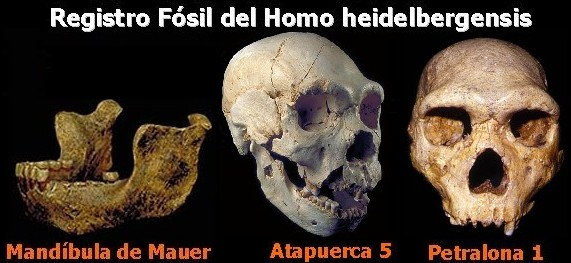

En el año de 1976 unos excursionistas de cuevas descubrieron La Sima de Los Huesos en España. Después de seis años de labores removiendo los sedimentos quedó al descubierto una verdadera mina de oro de la paleoantropología mundial. La Sima de los Huesos era depositaria de 700 huesos de homínidos de al menos 32 personas, con una antigüedad que ronda los 300.000 años. Este yacimiento da luz sobre los primeros habitantes de Europa. Estos espectaculares hallazgos ayudan a completar el escenario de la evolución humana.
Sin embargo, es triste saber que en un afán sectario y egoísta los cristianos fundamentalistas engañan a sus fieles sobre estos temas científicos. Los restos hallados en La Sima de Los Huesos hacen parte de la especie Homo heidelbergensis de la cual los creacionistas mienten afirmando: “Formado en base a una quijada que muchos consideran más bien una mandíbula humana.” (¿Abuelito?, CHICK PUBLICATIONS.)
El texto creacionista se refiere al primer resto conocido de los heidelbergensis, la mandíbula de Mauer. El argumento manejado por los creacionistas tiene la intencionalidad de transmitir la idea que lo único que se conoce del Homo heidelbergensis es una mandíbula: nada más. Además, que esta mandíbula es igual a la nuestra. Tal argumento es falso.
Si bien es cierto que la mandíbula de Mauer sirvió para describir la especie Homo heidelbergensis, esta mandíbula no es igual a la de nuestra especie (Homo sapiens). La mandíbula de Mauer fue examinada por el anatomista alemán Schoentensack, quien se dio cuenta que la mandíbula es muy larga, robusta y con el mentón retraído (pareciéndose a las del Homo erectus), pero en su morfología dental es más moderna. Dadas estas características Schoentensack propuso una nueva especia humana a la que bautizó: Homo heidelbergensis.
Según la correlación de fauna (comparación de la fauna fósil de un yacimiento con la de otro) se ha estimado la edad de la mandíbula de Mauer en 500.000 años antes del presente, lo cual la ubica en el Pleistoceno medio.
Como se afirmó al comienzo, la mandíbula de Mauer no es el único resto que se conoce del Homo heidelbergensis. En el año de 1971 se encontró en Francia un rostro casi completo, con cinco dientes molares y parte de la bóveda craneal. La capacidad craneal de este espécimen es de 1150 c.c. Este hallazgo se conoce ahora como “el Hombre de Tautavel o Arago XXI”. La edad del Hombre de Tautavel se ha estimado en 400.000 años.
En Grecia también se han encontrado restos del Homo heidelbergensis. El hallazgo griego se conoce con el nombre de “Petralona 1.” Su capacidad craneana es de 1220 c.c., alto para ser un Homo erectus, pero bajo para ser un Homo sapiens, con una cara alargada y una mandíbula muy ancha.
En Alemania se ha hallado un cráneo muy completo en Stenheim (Alemania), su edad es de 300.000 años aproximadamente. En la Sima de los Huesos (Atapuerca - España) se encontró, sin lugar a dudas, el mejor cráneo de Homo heidelbergensis descubierto hasta el momento. El cráneo recibió el nombre de “Atapuerca 5”. Su antigüedad se estima en 300.000 años, y su capacidad craneal es de 1125 c.c.
Dentro de los heidelbergensis hubo individuos cuyo cerebro era del mismo tamaño que el nuestro, si bien el promedio era algo menor. El paleoantropólogo Juan Luis Arsuaga afirma que la población europea de Homo antecessor dio origen a la especie Homo heidelbergensis y ésta a su vez a los Homo neanderthalensis.

Como se puede notar, el argumento creacionista de rechazar la existencia de esta especie humana extinta carece de fundamentos, y el hecho de presentar información parcializada y tendenciosa sobre el Homo heidelbergensis es prueba de su falta de honestidad.
Volver a la sección Ciencias de los orígenes
Comentarios
Comments powered by Disqus